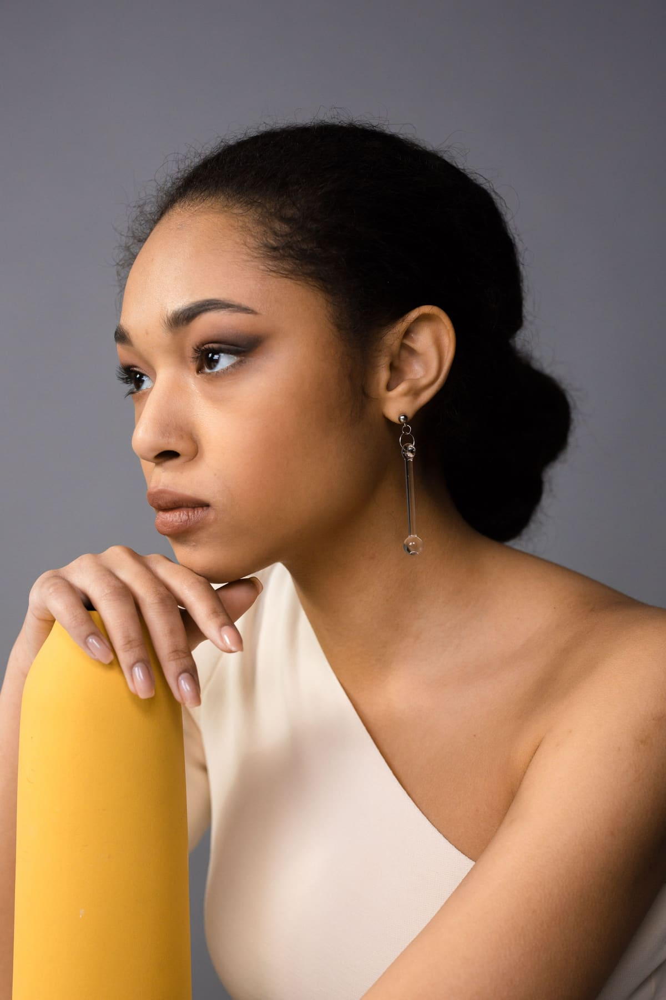
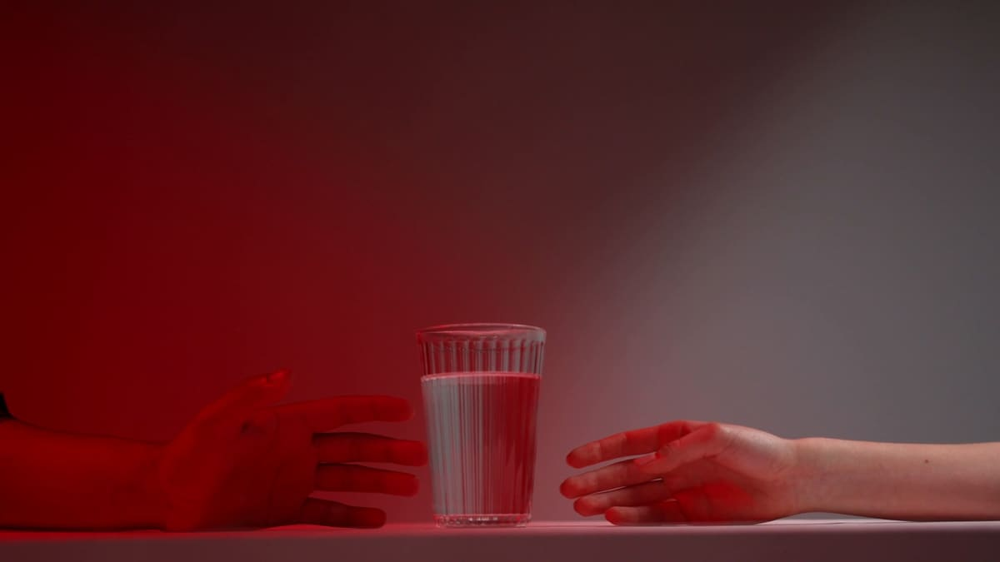
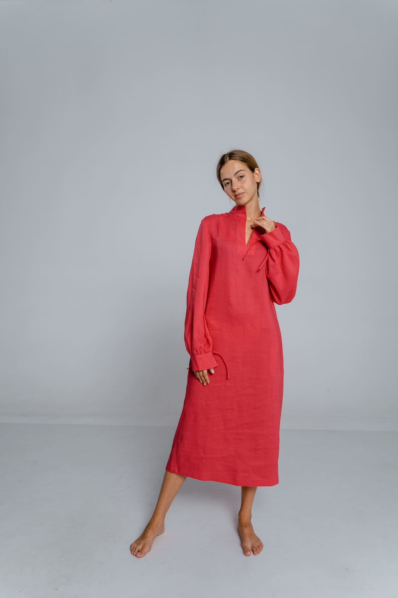
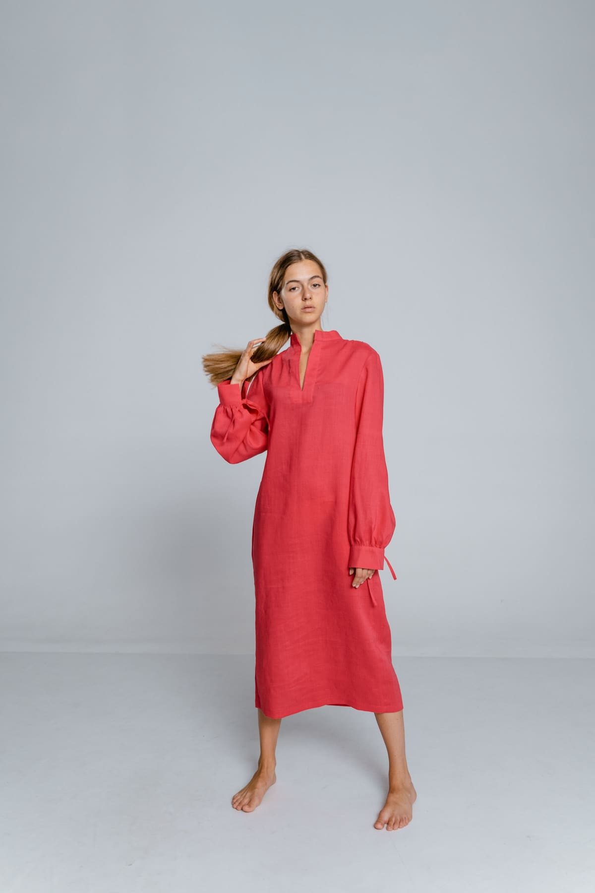
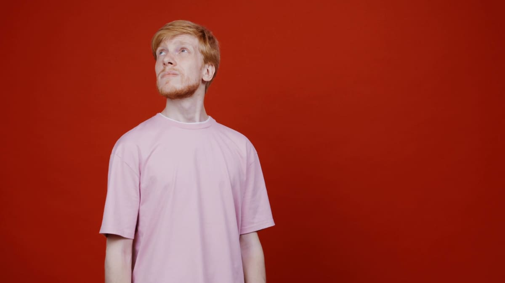

Planning a shoot 3 min read
Photography and film for fashion, brands and people
The cut of a jacket, light across stone, the shape of a face.

Work
Six shoots, each from one session. Open one to see every frame and our edit.
A launch campaign for a drinks brand, built on one glass of water and one red light.
A spring lookbook for a linen label: one dress, every angle, and the details that sell it.
A personal portrait session at home, lit by one window and nothing else.
A collection launch for a ceramics studio: the pieces on their own, then with a person for scale.
An editorial story for a tailoring label: one suit, shot with flash on location.
Press portraits for a performer: a full length and close frames, against red and pale blue.
All photographs and films here are credited stock images from Pexels, standing in for a studio’s own work. See the credits.
Film
It loads and plays only when you press play.

Services and process




Our selects: 4 of 10
We start with what the pictures are for and where they will live: a product page, a lookbook, a feed, a press portrait. You bring references, and we agree on a direction and a shot list.
Crew, styling, location and light are booked before the day, so time on set goes on the pictures. You see frames as they come in and can ask for changes as we go.
You get a contact sheet of the whole shoot and mark your selects. We retouch those and deliver each one at the sizes and crops its placements need.
What we shoot
Pictures built around the clothes, the cast and the cut.
Product and still life that show the material, the finish and the scale.
Portraits for people who don’t pose for a living.
Short films shot alongside the stills, cut to the screen they will play on.

Journal
Plan a shoot
Four short steps, plus any frames you picked on our shoots. Nothing is sent from this page.